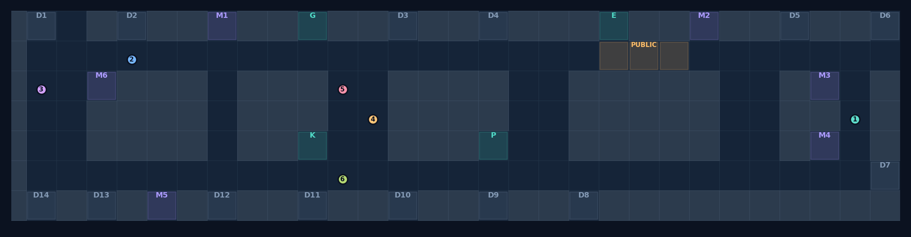

Simultaneous Task Allocation and Planning for Multi-Robots under Hierarchical Temporal Logic Specifications
Follow six robots as their actions complete a mission, one subtask at a time.
An office, shared
by six robots.
Desks, meeting rooms, service rooms, and public corridors give the logical propositions a physical location.


Initial positions with seed 42. The same map and robot colors appear in the videos.
Watch the plan unfold.
Select a scenario, then press play. Use fullscreen for the LTL details.
Bin service
Two subtasks coordinate collection, disposal, emptying, and return at desk D5.
Planner case 12 · minmax · seed 42
What to watch for
- p100: collect the bin, carry it, dispose of it, and reset.
- p200: empty at G, then return and reset at D5.
- A robot carrying the bin must avoid public cells.
R5 completes p200 at step 23; R1 completes p100 at step 35. The specification does not impose a pickup-before-empty order between these children.
Read the task
as it happens.
The progress display connects logical requirements to robot actions and positions in the recorded plan.
The root p0 groups mission branches. Leaf cards track concrete robot tasks; in Scenario 4, p301 adds an intermediate photo mission.
The robot indicators show current actions. Public-cell hatching applies to robots carrying a bin or document; camera states reflect meeting-room actions.
Amber indicates active work, green indicates completion, and a dim outline means pending. Child completion events contribute to parent progress.
The demos preserve the planner’s execution with --cost=minmax. No collision avoidance or parking schedule is added. Collision reports are diagnostics and do not alter robot paths.
AI2THOR simulation.
The original repository recording, retained with its frames and audio. This is a separate demonstration, not a rerun of the four scenarios above.
Open original demonstration ↗Built on formal
task specifications.
Xusheng Luo and Changliu Liu. “Simultaneous Task Allocation and Planning for Multi-Robots under Hierarchical Temporal Logic Specifications.” IEEE Transactions on Robotics, 2025.
Cite this work · BibTeX
@article{luo2025simultaneous,
title={Simultaneous Task Allocation and Planning for Multi-Robots under Hierarchical Temporal Logic Specifications},
author={Luo, Xusheng and Liu, Changliu},
journal={IEEE Transaction on Robotics},
year={2025},
publisher={IEEE}
}